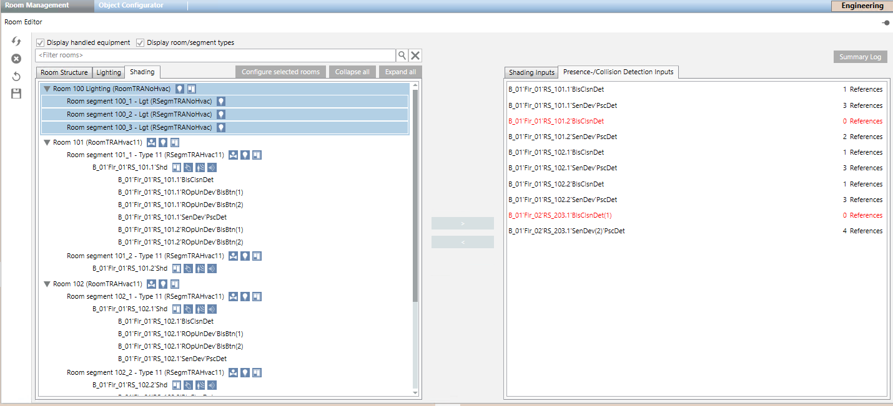

Configure Room Management
This section includes instructions on Room Management. You can edit the following configurations in the Room Management workspace:
- Assign an existing segment to another room
- Reconfigure lighting in a room with multiple switches
- Reconfigure shading control in a room with multiple switches
Background information is available in the reference section.

The following applies to all work instructions:
- The Room Management check box is selected in your user group entitlement.
- Desigo Automation data is imported.
- The online connection is established.
- System Manager is in Engineering mode.
Steps:
- In System Browser, select Application View.
- Select Applications > Room Management > Room Editor.
- In System Browser, select Manual navigation.
- In System Browser, select Logical View.